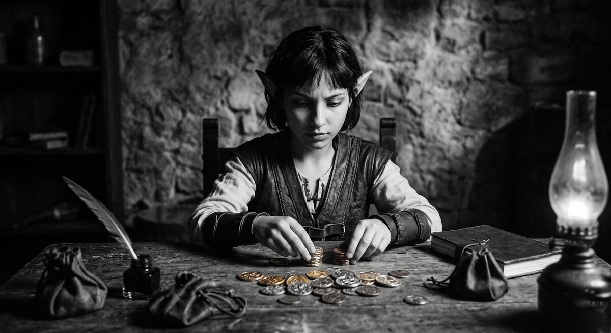

Mechanics
Economy: money as character
Money in Greenhaven is not a calculator. The price on a service is a point of character: a merchant who names the price first is different from a merchant who hides it; a character who remembers a debt is different from one who forgets. This chapter is about how the currency system works and, more importantly, why it is what it is.

Three coins — and why they are named exactly so
The world has three kinds of coin, and their names are hard-coded:
@Copper coin— copper.@Silver coin— silver (worth one hundred copper).@Gold coin— gold (worth one hundred silver, i.e. ten thousand copper).
Why is the name not allowed to vary? Because the engine searches the text for these specific strings when it parses merchant prices. If you write "2 cp" or "5 copper" or "25 gold," the engine will not recognize them as money. Trade will break.
So the rule is simple and absolute: coins are always called exactly
@Copper coin, @Silver coin, @Gold coin. In any other part of
the world you can write as you please — but coins are sacred.
Where currency files live
Coins are items, and they have their own files. They live not in locations but in a dedicated economy folder:
GreenHavenWorld/
└── Economy/
├── Currency.md ← general description of the system
└── items/
├── @Copper coin/
│ ├── CopperCoinMind.md
│ └── images/icon.png
├── @Silver coin/
│ ├── SilverCoinMind.md
│ └── images/icon.png
└── @Gold coin/
├── GoldCoinMind.md
└── images/icon.png
The files are built like ordinary items: ## Item Canon,
## Description, ## Usage, ## Visual Brief. The icon is drawn
by the art generator — see the Images chapter.
How to write prices
Prices live in the ## Merchant section of a merchant character's
file. The correct format is number, space, coin name with @:
- read a letter — 2 @Copper coin
- translate a note — 5 @Copper coin
- city rumor — 3 @Copper coin
- dangerous address — 2 @Silver coin
- companion contract — 25 @Gold coin
Wrong — the engine will not parse these:
- read a letter — 2 cp (no @ name)
- translate a note — 5 copper (no @ token)
- dangerous address — 200 (no currency at all)
Memory of payments
The most interesting detail of Greenhaven economics is memory. A merchant remembers who paid, how much, for what, and whether they have settled. If the hero says "I already paid you," the merchant checks against their memory, not against the hero's tone.
It is not a separate field and not a numerical counter. It is just a
paragraph in the ## Merchant section in which you tell the engine,
in plain words: "this character keeps the books."
I remember who paid, how much, for what service, whether I gave
change, whether a debt or advance is outstanding. If the hero claims
to have already paid, I check that against what I remember, not
against the confidence in his tone.
That paragraph is more than color. The engine sees it and understands: every transfer of coin must be recorded. Not in words, but as an actual transfer of coins from hero to merchant. If the player tries to cheat, the merchant catches them.
Trading contracts
When a character sells a service, it is not "give money, get thing." It is a contract with rules the character sets themselves:
## Merchant
My rules:
- I name the price before the service.
- The deal exists only after a real transfer of coin.
- I do not give discounts to strangers.
- I do not forgive debts, but I will accept a service in lieu of
coin.
These rules are character. One merchant gives no credit; another forgives a debtor once a year; a third will accept a service in trade. Through such rules, characters become recognizable as merchants.
Prices as gameplay, not realism
Prices in Greenhaven do not need to be "plausible" in an economic sense. You do not have to compute what a hand-written note really cost a medieval scribe. Prices should do four things.
Create a choice. "Twenty-five gold for a long companion contract, or find a way without?" — that is a choice. Not an optimization problem.
Reflect relationship. Fair payment is positive strings. An attempt to cheat is negative strings. Price is a test of respect.
Open content. An expensive rumor leads to a hidden location, the hidden location to a quest. Money is a key.
Be memorable. The merchant remembers. The hero remembers. The world remembers. Every deal is a small event, not a hollow transaction.
Mikka as an example of economy-as-character
Take Mikka, our goblin gossip merchant. Her price list is not a price list. It is character:
- Price first. She names the price before the hero asks. That is a business habit, and it sets the tone of the relationship immediately.
- Memory of payments. Every "I already paid" is checked. That is her character: she trusts evidence, not words.
- Services of different risk. Reading a letter is two copper. A dangerous address is two silver. This is not a table; it is a risk scale the player can feel.
- Companion as a contract. Twenty-five gold, paid to her in person, with consent on both sides. This is not an "expensive service" — it is an act of trust dressed in a price.
When you write a merchant in Greenhaven, try seeing prices through the same filter: what does each number communicate? What character does it draw?